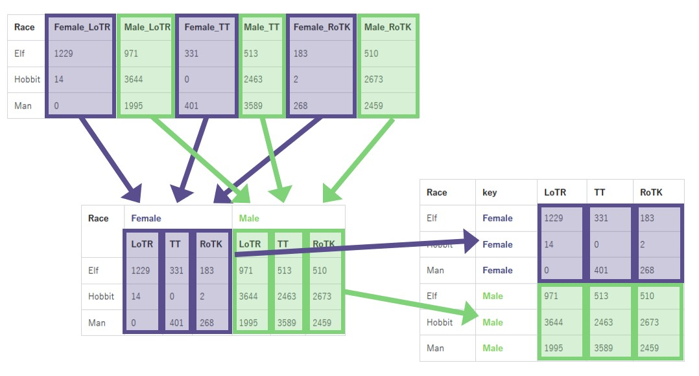

Enhancing gather() and spread() by Using “Bundled” data.frames
tidyr
tidy data
Author
Hiroaki Yutani
Published
February 3, 2019
Last month, I tried to explain gather() and spread() by gt package (https://yutani.rbind.io/post/gather-and-spread-explained-by-gt/). But, after I implemented experimental multi-gather() and multi-spread(), I realized that I need a bit different way of explanation… So, please forget the post, and read this with fresh eyes!
Wait, what is multi-gather() and multi-spread()??
In short, the current gather() and spread() have a limitation; they can gather into or spread from only one column at once. So, if we want to handle multiple columns, we need to coerce them to one column before actually gathering or spreading.
This is especially problematic when the columns have different types. For example, date column is unexpectedly converted to integers with the following code:
library(tibble)library(tidyr)# a bit different version of https://github.com/tidyverse/tidyr/issues/149#issue-124411755d <-tribble(~place, ~censor, ~date, ~status,"g1", "c1", as.Date("2019-02-01"), "ok","g1", "c2", as.Date("2019-02-01"), "bad","g1", "c3", as.Date("2019-02-01"), "ok","g2", "c1", as.Date("2019-02-01"), "bad","g2", "c2", as.Date("2019-02-02"), "ok")d %>%gather(key = element, value = value, date, status) %>%unite(thing, place, element, remove =TRUE) %>%spread(thing, value, convert =TRUE)
Warning: attributes are not identical across measure variables;
they will be dropped
# A tibble: 3 × 5
censor g1_date g1_status g2_date g2_status
<chr> <int> <chr> <int> <chr>
1 c1 17928 ok 17928 bad
2 c2 17928 bad 17929 ok
3 c3 17928 ok NA <NA>
Here, we need better spread() and gather(), which can handle multiple columns. For more discussions, you can read the following issues:
In this post, I’m trying to explain an approach to solve this by using “bundled” data.frames, which is originally proposed by Kirill Müller.
“Bundled” data.frames
For convenience, I use a new term “bundle” for separating some of the columns of a data.frame to another data.frame, and assigning the new data.frame to a column, and “unbundle” for the opposite operation.
For example, “bundling X, Y, and Z” means converting this
id
X
Y
Z
1
0.1
a
TRUE
2
0.2
b
FALSE
3
0.3
c
TRUE
to something like this:
id
foo
X
Y
Z
1
0.1
a
TRUE
2
0.2
b
FALSE
3
0.3
c
TRUE
You might wonder if this is really possible without dangerous hacks. But, with tibble package (2D columns are supported now), this is as easy as:
# A tibble: 3 × 2
id foo$X $Y $Z
<int> <dbl> <chr> <lgl>
1 1 0.1 a TRUE
2 2 0.2 b FALSE
3 3 0.3 c TRUE
For more information about data.frame columns, please see Advanced R.
An experimental package for this
I created a package for bundling, tiedr. Since this is just an experiment, I don’t seriously introduce this. But, for convenience, let me use this package in this post because, otherwise, the code would be a bit long and hard to read…
I need four functions from this package, bundle(), unbundle(), gather_bundles(), and spread_bundles(). gather_bundles() and spread_bundles() are some kind of the variants of gather() and spread(), so probably you can guess the usages. Here, I just explain about the first two functions briefly.
bundle()
bundle() bundles columns. It takes data, and the specifications of bundles in the form of new_col1 = c(col1, col2, ...), new_col2 = c(col3, col4, ...), ....
library(tiedr)d <-tibble(id =1:3, X =1:3*0.1, Y = letters[1:3], Z =c(TRUE, FALSE, TRUE))bundle(d, foo = X:Z)
# A tibble: 3 × 2
id foo$X $Y $Z
<int> <dbl> <chr> <lgl>
1 1 0.1 a TRUE
2 2 0.2 b FALSE
3 3 0.3 c TRUE
bundle() also can rename the sub-columns at the same time.
bundle(d, foo =c(x = X, y = Y, z = Z))
# A tibble: 3 × 2
id foo$x $y $z
<int> <dbl> <chr> <lgl>
1 1 0.1 a TRUE
2 2 0.2 b FALSE
3 3 0.3 c TRUE
unbundle()
unbundle() unbundles columns. This operation is almost the opposite of what bundle() does; one difference is that this adds the names of the bundle as prefixes in order to avoid name collisions. In case the prefix is not needed, we can use sep = NULL.
d %>%bundle(foo = X:Z) %>%unbundle(foo)
# A tibble: 3 × 4
id foo_X foo_Y foo_Z
<int> <dbl> <chr> <lgl>
1 1 0.1 a TRUE
2 2 0.2 b FALSE
3 3 0.3 c TRUE
Expose hidden structures in colnames as bundles
One of the meaningful usage of bundled data.frame is to express the structure of a data. Suppose we have this data (from tidyverse/tidyr#150):
In this data, the prefixes Female_ and Male_ represent the column groups. Thus, as Kirill Müller suggests in the comment, these columns can be bundled (with the sub-columns renamed) to:
Remember gather() strips colnames and convert it to a column. We can do this operation for bundled data.frames in the same manner. But, unlike gather() for flat data.frames, we don’t need to specify a colname for values, because the contents in bundles already have their colnames.
Let’s gather Female and Male bundles into key column.
# A tibble: 6 × 5
Race key LoTR TT RoTK
<chr> <chr> <dbl> <dbl> <dbl>
1 Elf Female 1229 331 183
2 Hobbit Female 14 0 2
3 Man Female 0 401 268
4 Elf Male 971 513 510
5 Hobbit Male 3644 2463 2673
6 Man Male 1995 3589 2459
Race
key
LoTR
TT
RoTK
Elf
Female
1229
331
183
Hobbit
Female
14
0
2
Man
Female
0
401
268
Elf
Male
971
513
510
Hobbit
Male
3644
2463
2673
Man
Male
1995
3589
2459
Now we have all parts for implementing multi-gather(). I did bundling by manual, but we can have a helper function to find the common prefixes and bundle them automatically. So, multi-gather() will be something like:
d %>%auto_bundle(-Race) %>%gather_bundles()
# A tibble: 6 × 5
Race key LoTR TT RoTK
<chr> <chr> <dbl> <dbl> <dbl>
1 Elf Female 1229 331 183
2 Hobbit Female 14 0 2
3 Man Female 0 401 268
4 Elf Male 971 513 510
5 Hobbit Male 3644 2463 2673
6 Man Male 1995 3589 2459

spread() to the bundles
As we already saw it’s possible to gather() multiple bundles, now it’s obvious that we can spread() multiple columns into multiple bundles vice versa. So, let me skip the details here.
As I described above, multi-gather() doesn’t need the column name for value. On the other hand, usual gather() needs a new colname. Because, while it needs a name to become a column, an atomic column doesn’t have inner names.
Similarly, usual spread() can be considered as a special version of multi-spread(). Consider the case when we multi-spread()ing one column:
# an example in ?tidyr::spreaddf <-tibble(x =c("a", "b"), y =c(3, 4), z =c(5, 6))spread_bundles(df, key = x, y, simplify =FALSE)
# A tibble: 2 × 3
z a$y b$y
<dbl> <dbl> <dbl>
1 5 3 NA
2 6 NA 4
Since y is the only one column in the data, we can simplify these 1-column data.frames to vectors:
spread_bundles(df, key = x, y, simplify =TRUE)
# A tibble: 2 × 3
z a b
<dbl> <dbl> <dbl>
1 5 3 NA
2 6 NA 4
This is usual spread().
I’m yet to see if we can improve the current spread() and gather() to handle these differences transparently…
Future plans
Probably, this post is too much about the implementational details. I need to think about the interfaces before proposing this on tidyr’s repo.